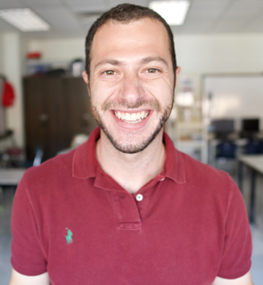

Hey, I'm David Steckler. Most just call me Steckler. I teach computer science to 7th graders, which wasn't my original plan - I've got a math background. But teaching programming and robotics has been unexpectedly rewarding. When I started, I was literally one day ahead of the students. Intense, but I loved learning alongside them.
I'm into spontaneous challenges. Once joined a half marathon mid-run just because. That's my approach to life - embracing unexpected opportunities.
My website dives into tech, AI, education, philosophy, and finding meaning. Here's some of what I'm working on:
When COVID hit, I upgraded my setup. Bought a Sony a6400 and a Sigma 16mm f/1.4 to make better video lessons. It was a ton of work, but I wanted my students learning from me, not random YouTubers.
That's the gist. If any of this resonates - whether you're an educator looking for new strategies, a tech enthusiast curious about AI, or just someone trying to find more meaning in life - feel free to dig into my content. I'm always up for questions and going deep on these topics.